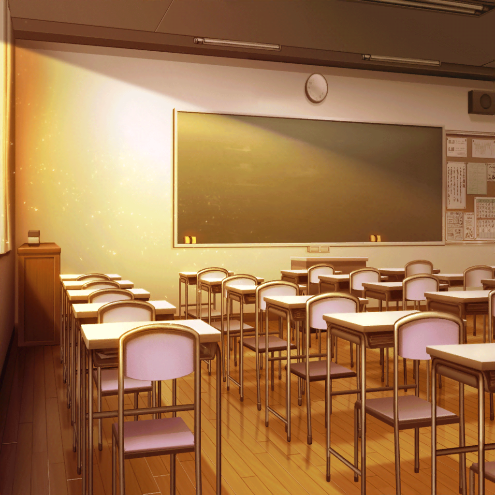

花咲川女子学園 教室 ２-B
紗夜
白金さん。
少しお時間いいかしら？
燐子
氷川さん……？
は……はい……大丈夫……ですけど……
紗夜
ありがとう
紗夜
実は……その…………
燐子
ひ……氷川さん……？
燐子
（氷川さんが……こんなに……
モジモジ……してるなんて……珍しい……）
紗夜
こ、これを、どうぞ
燐子
……これは……
燐子
（かわいい包装袋……）
燐子
中……開けてみても、いいですか……？
紗夜
も、もちろんです
燐子
そ、それじゃあ…………あ、これ……
クッキー……ですか……？
紗夜
ええ。先日商店街で
お菓子教室のポスターを一緒に見たでしょう？
燐子
……はい……一緒に帰った時……ですよね？
紗夜
そうです。
あの時、私も思うところがあって……
ポスターの教室に参加してみたんです
紗夜
そのクッキーは、そのお菓子教室で作ったものです
燐子
……ということは……氷川さんの……手作り……
紗夜
ええ、その通りです。
もしよければ
白金さんの感想を聞かせてもらえませんか？
燐子
わ……わかりました……
わたしで……よければ……
燐子
これ……アイシングクッキーですよね？
紗夜
え、ええ……
燐子
このギターの形……
とってもかわいい……と……思います……
燐子
……食べるのが……もったいない、くらい……です
燐子
それでは……い、いただきますね……
紗夜
…………
燐子
……あ、あの……
紗夜
あ、ごめんなさい。
見つめていたら食べにくいわよね……
燐子
いえ……
では、改めて……
燐子
…………
紗夜
ど、どうかしら？
一応、上手く作れたと思うのだけれど……
燐子
お、おいしい……
紗夜
ほ、本当に？
燐子
はい……
こんなに……おいしいクッキーを作れるなんて……
氷川さん……す、すごいです……
紗夜
そう……それならよかったです
燐子
今……ここで……
全部……食べてしまいたい……くらいなんですけど……
燐子
もったいないので……
残りは……お家で……ゲームをするときに……
食べますね……
紗夜
片手間で食べられるから
いいんでしたよね？
燐子
はい……
今日は……美味しいクッキーが……あるので……
いつもより……頑張れそうです……
紗夜
ほどほどにしないとダメですよ？
燐子
は……はい……
あ、あの……氷川さん……
紗夜
どうしました？
燐子
クッキー……ありがとうございます……